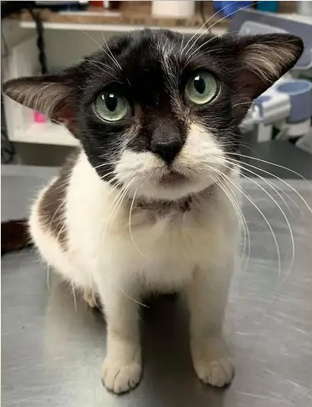
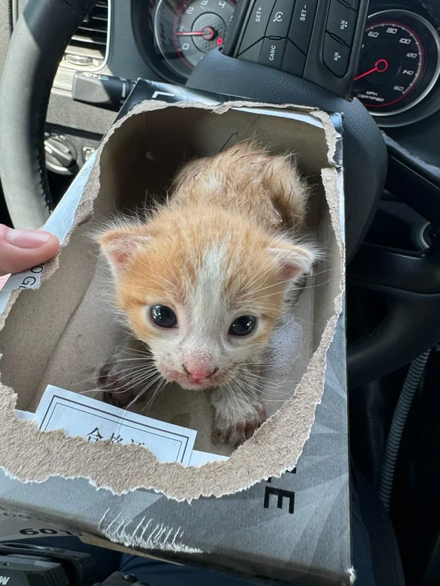
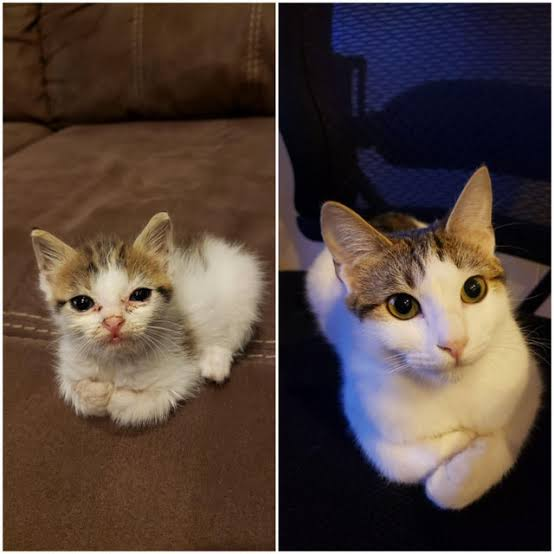
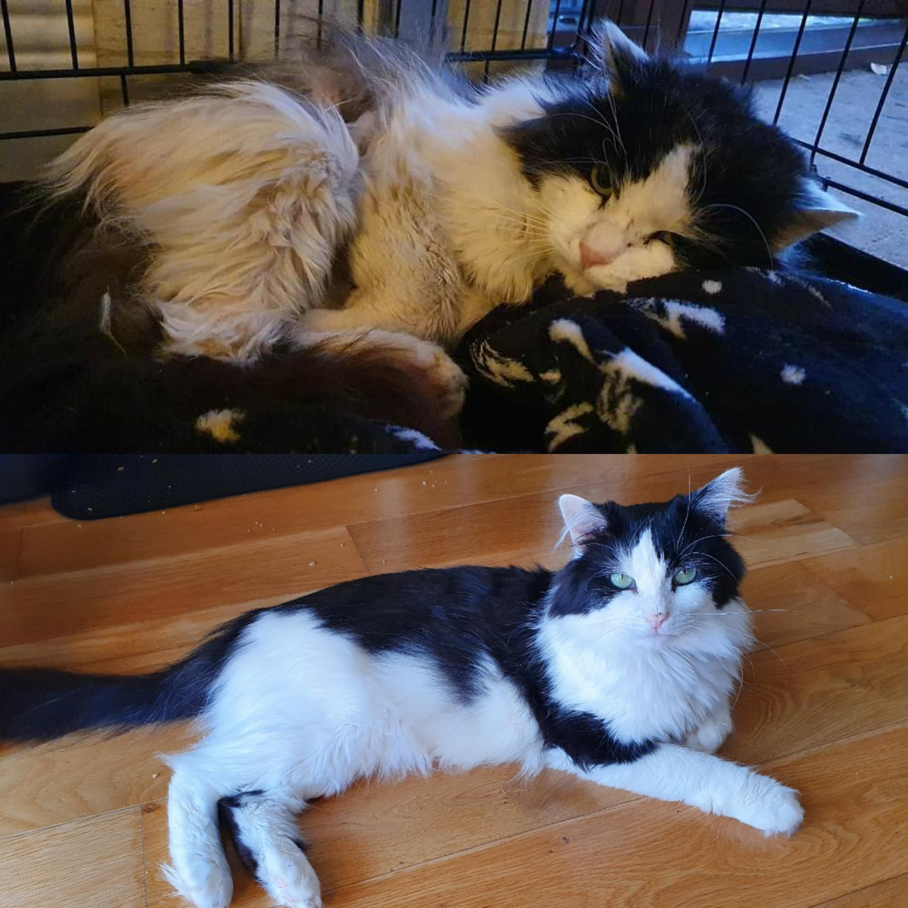

Luna

Luna is a friendly and loving cat who spent her life with an elderly lady who sadly passed away recently.
Sadly, her owner passed away, and now she is looking for a new family.
Meet the cats that are waiting for their forever homes!
Every cat has a different personality and story. Some are playful, but others are calm and enjoy spending time with peoplle. Take a look at our cats!

Luna is a friendly and loving cat who spent her life with an elderly lady who sadly passed away recently.
Sadly, her owner passed away, and now she is looking for a new family.

Milo is a very playful kitten who was found in a park.
He loves exploring, playing, and being around people.

Marino is a mele cat who was rescued from the streets when he was just a kitten.
He needed some veterinary care but now he is a sweet and loving 6 month old cat who loves to cuddle! He has been waiting for a family that will love him as much as he loves people!

Starfish is a calm kitten whose mother showed up at someone's doorstep looking for a safe place
He was named after a starfish because he loves sleeping with his legs stretched out, just like one! He has been surrounded by love since he was little, which has made him a very sweet and affectionate cat. He loves relaxing in comfortable places and lying in the sun. Now, he is looking for a loving family to give him a forever home.
If you found a cat that you would like to adopt, visit our adoption page to learn about the process and requirements.